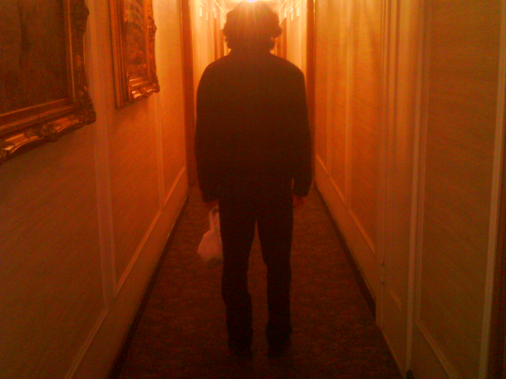

Students of School of the Art Institute of Chicago's Writing for Film, Video, and Performance are pleased to present LIMBO? AN EXPIRATION DATE!, an online streaming event of unique visions that moves and explores on the edge, pushing the boundaries of image making to their invisible borders and reaches beyond. Contemplations of mental health, the beauty and horrors of dreamscapes, constructions of narrative filmmaking, and the cycles of life and death and what lies in-between.
PRESENTING WORK BY :
Hongjin Chen →
Khanh Mai Doan →
Lam Son Hoang →
Philipp Groth →
Madelaine Guthrie →
Elisabeth James →
Jazmyn Joi →
Kris Liu →
Meadow Meyer →
Jake Phillips →
Zihan Qiu →
Mo Gyeong Seong →
Hatem Shakkouf →
Lee Schulder →
Yezhou Zheng
Hongjin Chen
Hongjin Chen is a filmmaker from China. She is currently studying at the School of the Art Institute of Chicago. Majored in film making and directing, and other art fields involved include photography, painting, sculpture, fiber, and art therapy. Most of her works are presented in different ways to reflect various social issues. She believes that every artwork needs to be thought-provoking, not just for making art.
Khanh Mai Doan
Khanh Mai Doan was born in Ho Chi Minh City (HCMC), Vietnam in 2002. Despite not coming from a family with an art tradition, she soon found her interest in drawing at a very young age through reading comics and watching animated films. Throughout her time at AIS, a bilingual school where she studied for 10 years, Khanh was able to nurture her passion upon several art competitions, both in school and around HCMC, earning her an Award of Innovative Idea during 9th grade. Having her focus shift into filmmaking, Khanh decided to further challenge herself with the IB Diploma program at EF Academy New York in the last two years of high school. As a senior, she was nominated for IB Visual Arts HL and IB Psychology SL Student of the Year (with winning the latter one), both of which have greatly contributed to her perspective and skills on her learning journey as a filmmaker. In her free time, she can be found exploring the complexity of human’s mind and behavior artistically through photography, film editing/reviewing as well as graphic design. Khanh is currently a freshman at School of the Art Institute Chicago pursuing a BFA in Film.
Lam Son Hoang
Lam Hoang was born and raised in Vietnam and he is currently studying in Chicago, USA. He started his film and animation journey in 2018 and going to graduate in 2022. His project is characterized by the use of story, emotion, and internal reflections, presented in high contrast theme. He also enjoys street and travel photography as a means of finding beauty in the mundane.

Philipp Groth
Filmmaker and visual artist working between Chicago and Berlin. After studies at the University of the Arts London, “acte tm” was founded as his studio residence in Berlin, where he also teaches Film Production and Film Directing as a visiting lecturer at the Design Academy. In 2021, he was the recipient of the Dean Professional Development Award from The School of the Art Insitute of Chicago. In his practice he combines the form of narrative techniques and documentary with a spacial experience into imaginary journeys. In his film and sculpture work he is particularly interested in what it means to be a character and what it means to have a story.
Madelaine
Born and raised in the Bay Area, Madelaine Guthrie exists between the hippie and workaholic mindsets all San Franciscans strive for. Throughout her life, drawing, writing, acting, and filmmaking have defined her. Guthrie's passion for storytelling has driven her forward into the world of the arts. She is currently studying film at the School of the Art Institute of Chicago, and once she graduates in 2022 she plans to become everyone's problem.

Elisabeth James
I am a senior undergrad at SAIC, practicing as an experimental filmmaker and sound designer.
Jazmyn Joi
My name is Jazmyn Joi Hill, I am a student at SAIC in the Film and Video department that dabbles in Sound Production and Photography. My creative ideas do not usually manifest in a structured manner. My ideas seem to manifest the most in times of great distress or sometimes mass euphoria. For me, it is all about the mood and the impact; the lighting and ambiance sets the tone, allowing me to capture the raw image I see in my mind. During covid the lack of connection to not only friends and family but the world made creating script based works that include actors harder to do. This turned my focus into things I could do at home more easily which brought my focus to collage based ideas where I was able to take various images or footage and create a new meaning/understanding through this presentation.
Kris Liu
I'm Kris, a messy story teller. I love Kentucky Route Zero. I can't take violence in films very well unless it's done in a reasonable way.
Meadow Meyer
Meadow Meyer is an undergraduate at SAIC studying to get their BFAW. They use all pronouns. Meadow is a lesbian, Pisces, writer, actor, drag king and artist. She loves her cat Pixie and dancing!
Jake Phillips
Zihan Qiu
She is a sisty-year-old woman with a long face, a high nose bridge, thin lips, and sunken cheeks which make her cheekbones stand out. Her hair is very short, just above the top of her ears, and there is a pair of green earrings dangling under her earlobes. Her eyebrows are sparse, always drooping slightly, which make her seem a bit frustrating. The most prominent part of her face is her eyes. The eyes are filled with sharp light like blades even though the canthus is slashed with fine winkles. This kind of light was hidden while her eyelids were drooping, but most of the time, she stares at the pedestrians passing by. It is a gaze that does not contain any maliciousness. If you observe carefully, it may contain a certain amount of curiosity. Although she is a short woman and often squats on the overpass, her pure and unreserved gaze can even make passers-by who look at her look away.Mo Gyeong Seong
Mo Gyeong Seong was born. He continues to live with delusions of grandeur.
Hatem Shakkouf
Hatem Shakkouf is a filmmaker born in Kuwait and originally from Syria. He came to Chicago in 2018 to peruse a bachelors degree in the fine arts with a Film/Video/New Media focus. At his time at the art institute he has learned to mix the abstract with narrative. Some of his more favored skills include Data moshing.
Lee Schulder
Yezhou Zheng
I make videos.